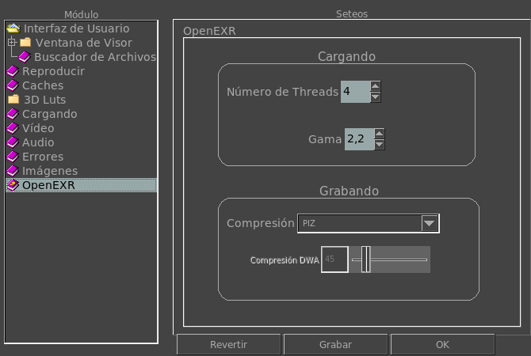

|  |
Esta opción te permite seleccionar cuantos hilos (threads) son usados para cargar las imagenes de OpenEXR. Dependiendo en tu CPUs y su carga, así como del tamaño de la imagen, más hilos pueden significar una carga más rápida. Esta opción te permite seleccionar que gama a usar por defecto cuando se carga una imagen OpenEXR. Esta opcion te permite elegir la compresión por defecto cuando se graba una imagen OpenEXR. Esta opción te permite seleccionar la calidad de compresión usada cuando se graba una imagen OpenEXR con los compresores DWAA o DWAB. Esta compresión, como JPEG, es con pérdidas de calidad. |